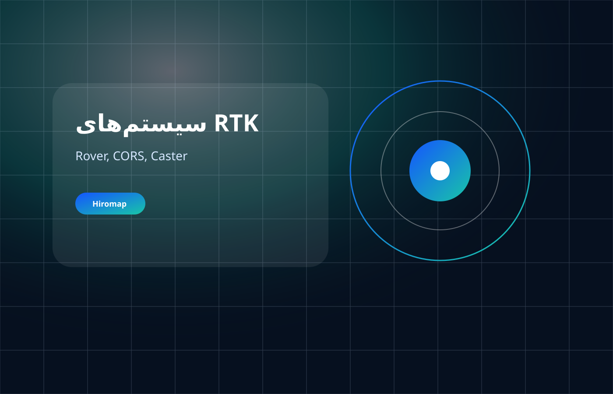
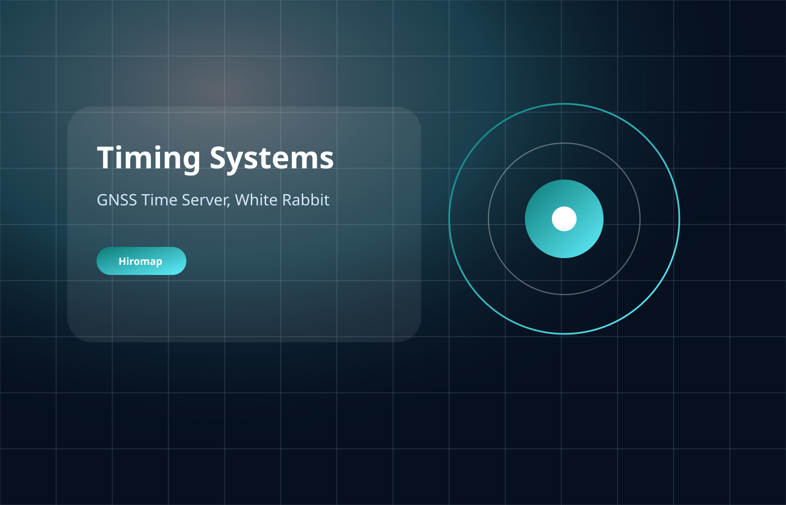
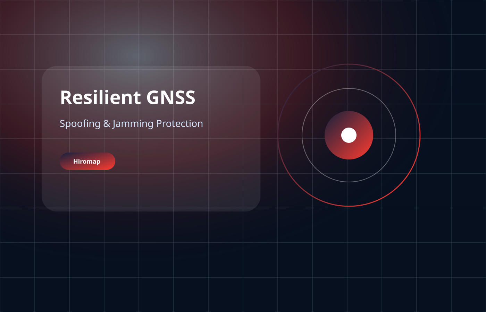

راهکار
راهکار RTK و CORS
طراحی و راهاندازی ایستگاه مرجع، شبکه تصحیحات و مدیریت کاربران RTK برای سازمانها و پروژههای بزرگ.
مشاهده راهکارراهکارهای مهندسی شده برای تبدیل محصول به سامانه عملیاتی قابل اتکا.

طراحی و راهاندازی ایستگاه مرجع، شبکه تصحیحات و مدیریت کاربران RTK برای سازمانها و پروژههای بزرگ.
مشاهده راهکارموقعیتیابی دقیق، ردیابی، هشدار خروج از مسیر، LPS تونلی و کمک عملیاتی ماشینآلات در معدن.
مشاهده راهکارموقعیتیابی سانتیمتری، هدایت ماشینآلات، برداشت مرز زمین و مدیریت عملیات کشاورزی دقیق.
مشاهده راهکار
تایمسرور GNSS، NTP/PTP، White Rabbit و معماری زمان دقیق برای شبکهها و زیرساختهای حساس.
مشاهده راهکار
پایش اسپوفینگ، مقابله با جمینگ و طراحی معماری PNT مقاوم برای کاربردهای حساس.
مشاهده راهکار